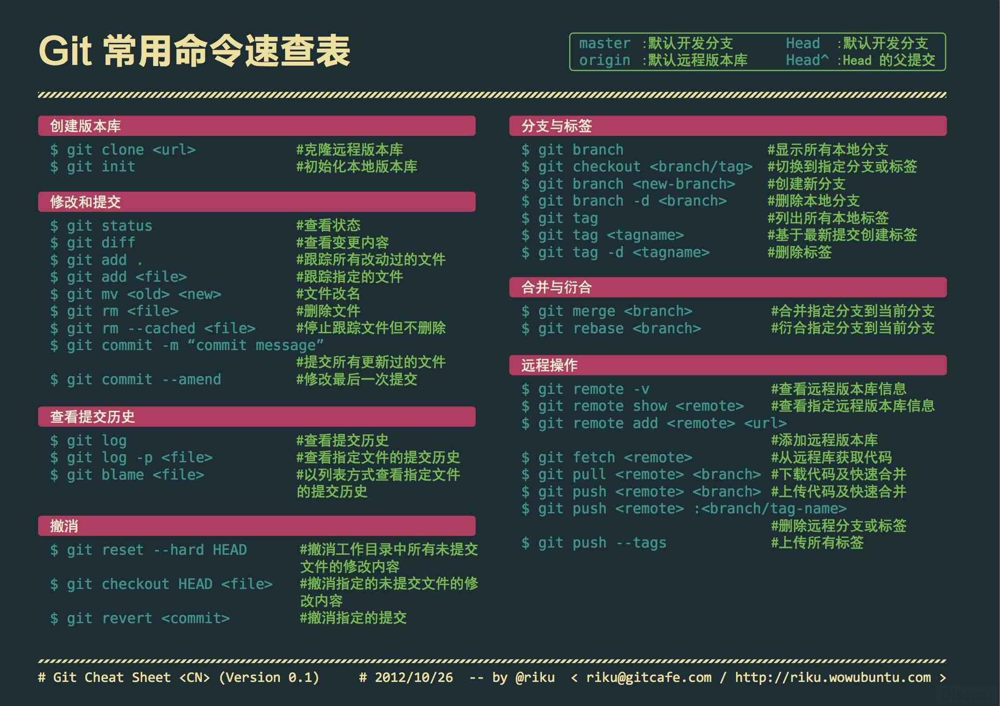

Git使用手册
创建仓库
- 创建新文件夹并打开，然后执行
git init以创建新的 git 仓库。 git init
检出仓库
- 创建一个本地仓库的克隆版本
git clone /path_to_repo - 创建一个远端仓库的本地克隆版本
git clone username@host:/path_to_repo
工作流
你的本地仓库由 git 维护的三棵“树”组成。
- 第一个是你的
工作目录，它持有实际文件； - 第二个是
暂存区（Index），它像个缓存区域，临时保存你的改动； - 最后是
HEAD，它指向你最后一次提交的结果。
添加和提交
- 将改动添加到暂存区
git add <filename> git add * - 将改动提交到本地仓库HEAD区
git commit -m “代码提交信息”
现在，你的改动已经提交到了 HEAD，但是还没到你的远端仓库。
推送改动
将本地仓库 HEAD 中内容提交到远端仓库
- 将改动提交到远端仓库。master为要推送的分支。
git push origin master - 将本地仓库连接到远端服务器
git remote add origin <server>
分支
分支是用来将特性开发绝缘开来的。在你创建仓库的时候，master 是“默认的”分支。 在其他分支上进行开发，完成后再将它们合并到主分支上。
- 创建一个叫做“feature_x”的分支，并切换过去
git checkout -b feature_x - 切换回主分支
git checkout master - 再把新建的分支删掉
git branch -d feature_x - 除非你将分支推送到远端仓库，不然该分支就是不为他人所见的
git push origin <branch>
更新与合并
要更新你的本地仓库至最新改动，执行：
- 更新你的本地仓库至最新改动
git pull - 要合并其他分支到你的当前分支（例如 master）
git merge - 将文件标记为合并成功
git add <filename> - 预览差异
git diff <source_branch> <target_branch>
创建标签
- 创建一个叫做 1.0.0 的标签,1b2e1d63ff 是你想要标记的提交ID的前10位字符。
git tag 1.0.0 1b2e1d63ff - 获取提交 ID, 可使用少一点的提交ID前几位，只要它的指向具有唯一性。
git log
替换本地改动
- 使用 HEAD中的最新内容替换掉工作目录中的文件,已添加到暂存区的改动以及新文件都不会受到影响
git checkout -- <filename> - 如想丢弃在本地的所有改动与提交，可以到服务器上获取最新的版本历史，并将你本地主分支指向它：
git fetch origin
git reset --hard origin/master - 交互式添加文件到暂存区：
git add -I
.gitignore
一般来说每个Git项目中都需要一个“.gitignore”文件，这个文件的作用就是告诉Git哪些文件不需要添加到版本管理中。
/mtk/ 过滤整个文件夹 *.zip 过滤所有.zip文件 /mtk/do.c 过滤某个具体文件 !*.jar 指定要将哪些文件添加到版本管理中 !/mtk/one.txt 指定要将哪些文件添加到版本管理中
如果你不慎在创建.gitignore文件之前就push了项目，那么即使你在.gitignore文件中写入新的过滤规则，这些规则也不会起作用，Git仍然会对所有文件进行版本管理。
GitHub
git clone git@github.com:wangwg2/vagrant.gitgit clone https://github.com/wangwg2/vagrant.git
git图解
Git命令速查

Git Data Transport Commands